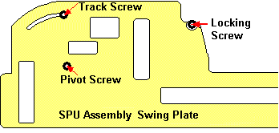
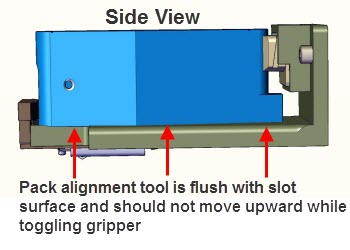
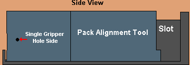
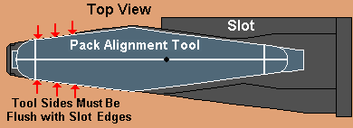

This procedure describes how to align the reagent pack gripper in the x-axis and z-axis.
Required Materials:
Reagent pack alignment tool—P/N 386193 (blue)
Reagent pack
Prerequisites:
All mechanical adjustments to the following devices must be completed before performing the software alignments in this procedure:
Reagent pack gripper y-axis adjustments
For serial numbers 602697 and 900568 and higher, all reagent pipettor nest to reagent pipettor adjustments
Alignment Summary:
The reagent storage module interacts internally with the reagent pack gripper and pipettor slot locations. Reagent packs are moved in and out of the slots by the pack gripper, which must be aligned precisely to operate correctly.
Alignments to the reagent storage module gripper alignments are performed at these primary locations:
Instruments with serial numbers 602697 and 900568 and higher have slotted pipettor slots and slotted mounting holes in the reagent storage module. This design improvement allows more accurate alignment of the reagent pipettor probe to the reagent pack in the x-direction. Version 4.4 and higher includes support for the gripper x-alignment to pipettor slots to account for the variable pipettor slot x-position.
gripper to storage slots
Reagent pack storage slot 05, 20, 37 and 50
Manual alignments
These four locations are the upper and lower corners of the storage slot array.
gripper to load tray
Reagent load tray slot 1 (T1)
Manual alignments
Alignment is performed at load tray position 1.
Remaining reagent pack storage slots
Software and Manual alignments
System software determines the remainder of the alignments by calculating a matrix from the four corner alignment slots (5, 20, 37, and 50).
The engineer refines the remaining slots through the storage slot offset verification.
Terminology:
This document uses the term
storage slot to indicate the nests or black storage slots for reagent packs.
Saving Alignments:
Changes to alignment offsets are written to file:
when the alignments are saved while exiting the
Alignment screen.
by selecting
Alignments / Offsets > Save Alignments.
Caution: Because of the remap, this procedure causes all on-board expired backs to become unusable.
Confirm that all gripper y-axis adjustments are complete.
The locking screw prevents the SPU from swinging outward from the instrument. It is not necessary to remove the screw because the SPU plate is slotted.

Remove the 3/16-in hex bolt located near the right end of the SPU cover.
Open the lower right access panel on the front of the instrument.
Pull the spring-loaded captive pin that holds the panel (located under the SPU) to the frame.
Grasping the SPU near the right end, swing the right end away from the instrument.
Warning: The SPU off-load area slides forward and rearward as the SPU is swung in and out. To prevent damage to the SPU or the off-load area, confirm that nothing obstructs the movement of the off-load area as the SPU is moved.
(For China and Canada Only.) On the front facing the edge of the Framus assembly, install the Chinese and French labels adjacent to the existing English label.
Note: The labels are in the DxI Installation Kit.
Prepare the instrument.
Remove the storage module cover.
Verify that the top cover, SPU, and reagent storage interlock switches are bypassed.
From the
Main Menu, select
Diagnostics
> Device Diagnostics > Mechanics
> Alignments.
Align reagent pack gripper to pipettor slot x- and z-positions.

Select
Reagent Pack Gripper as the device and
Pipettor 1Z
as the position.
Insert the reagent pack alignment tool into the selected alignment position.
Select
Move Z to Position.
Select
Toggle Gripper to grip the tool. Verify that the gripper prongs are aligned to the holes in the tool.
For instruments with serial numbers 602697 and 900568 and higher, select
Toggle Gripper several times and confirm that the pack remains stationary in the x-axis direction. If the pack moves with the gripper toggle, use the directional keys to adjust the offset and then select
Preserve Offsets/Save Alignments.
Remove the pipettor nest covers for a better view of the alignment.
Using the directional keys, step the gripper up or down to adjust the offset to the height at which the bottom of the pack tool barely contacts the slot.
If the alignment is difficult to view, remove the spring and the L-shaped Delrin holder form the storage slot.
Select
Preserve Offsets/Save Alignments.
Repeat the pack gripper to pipettor slot alignment for the remaining pipettor slots.
Align reagent pack gripper to storage slot x- and z-position (manual alignment).


Figure 347: DxI 800
Note: The DxI 600 has two fewer pipettor storage slots and two fewer load tray slots than the DxI 800.
Select
Reagent Pack Gripper as the device and
Slot 05 (N5)
as the position.
Insert the reagent pack alignment tool into the selected alignment position.
Select
Move Z to Position.
Select
Toggle Gripper to grip the tool. Verify that the gripper prongs are aligned to the holes in the tool.
Adjust the x-offset to align the tool so that either side is even with the side of the slot when the gripper is closed on the tool.
Select
Preserve Offsets/Save Alignments.
Using the directional keys, adjust the z-offset up until there is a slight separation between the pack and the storage slot.
Using the directional keys, adjust the z-offset down until the bottom of the tool barely contacts the slot.
Select
Preserve Offsets/Save Alignments.
Repeat the gripper to reagent pack storage slot alignment for slots 20, 37, 50 (N20, N37, N50) and for the reagent load tray (T1).
Verify the storage slot offset.
Warning: The DxI instrument can move without warning during this procedure. Select the
Stop button before placing your hands inside the storage module.
Note:
Alignment slots 05, 20, 37 and 50 offset values cannot be changed using the Storage Slot Offset Verification procedure.
Use this test routine to judge alignments.
Use one reagent pack for this test routine.
Complete the storage slot offset verification for all storage slot locations.
Figure 348: Storage slot offset verification section of the Reagent Storage screen
Remove all but one reagent pack from the storage module, and then select
Remap.
Adjust the Delay in Seconds to a value that allows enough time to judge the alignment and then select
Enter.
A value of five creates a five-second delay between the time the gripper moves to the desired slot and stops and the time the gripper starts the next move.
Select
Start and observe the gripper x- and z-axis alignments as the pack is placed in the slot.
To change the alignment, select
Stop, use the directional keys to adjust the offset, and then select
Save.
A software anomaly exists in software V4.4 and higher, where the Offset X and Offset Y field can contain incorrect alignment values. If incorrect alignment values are occurring, use the left side of the screen to perform a Move to reset the values on the right side of the screen. Avoid editing or trying to save values that are incorrect.
Note:
The gripper moves the reagent pack from one slot to the next.
The pack contacts the surface of the slot.
The slot does not move downward as the pack is placed in the slot.
The edge of the pack is even with the edge of the slot.
After saving the alignment, select
Start. The offset verification routine continues advancing to each storage slot location (no pipetting or reagent load tray positions) until
Stop is selected.
Allow the routine to complete one or two cycles, and observe all slot alignments.
Perform service tasks.
Remove the alignment tool.
Load the removed reagent packs.
Remove all switch by-pass devices and the tape on the reagent storage interlock switch, if applied.
Replace the reagent storage cover and any pipettor nest covers that were removed.
Close the upper left instrument cover.
Close the SPU.
The SPU is hinged on the left side. The right side is released and can be swung out from the instrument to approximately 45 degrees.
Warning: The SPU off-load area slides forward and rearward as the SPU is swung in and out. To prevent damage to the SPU or the off-load area, confirm that nothing obstructs the movement of the off-load area as the SPU is moved.
Grasping the SPU near the right end, swing the right end toward the instrument.
Pull the spring-loaded captive pin to attach the panel (located under the SPU) to the frame.
Close the lower right access panel on the front of the instrument.
Insert the 3/16-in hex bolt.
Tighten the bolt that holds the SPU from swinging outward from the instrument (locking screw).
Close the upper left cover of the instrument.
Note: Initialize the instrument after opening and closing the SPU, because a switch is actuated when the SPU is opened.
Initialize the system with
Remap selected.
Verify system operation.
Perform system verification as stated in the Verification of Service Repair document .